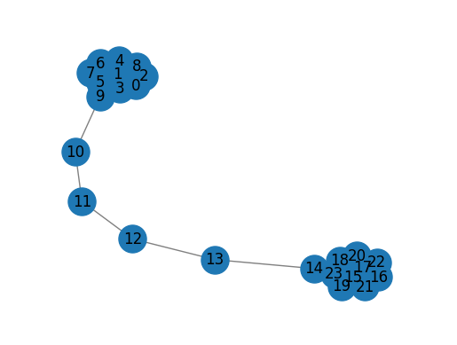
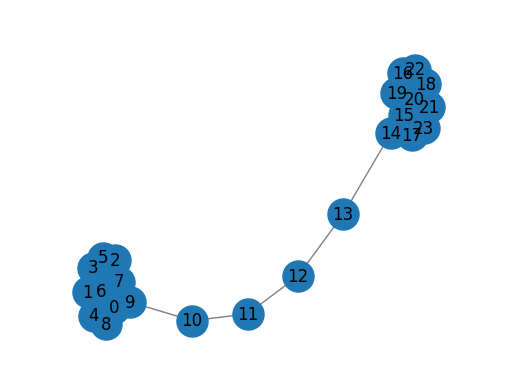
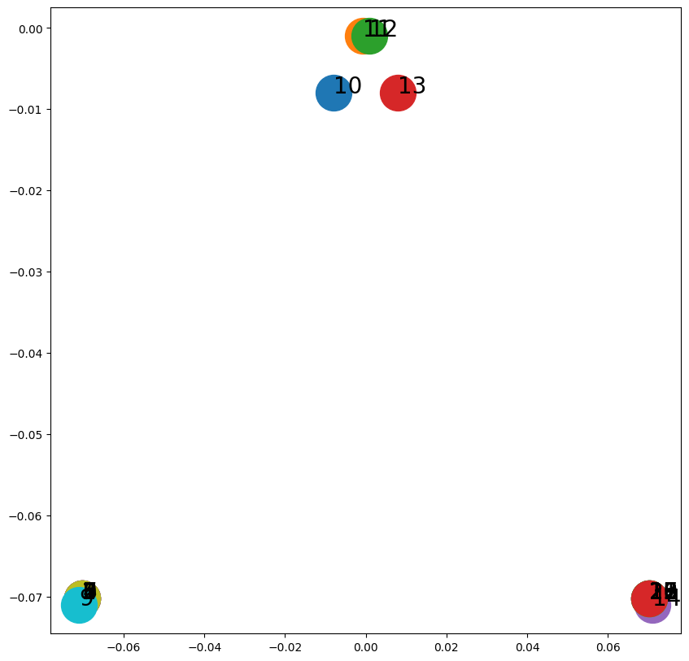
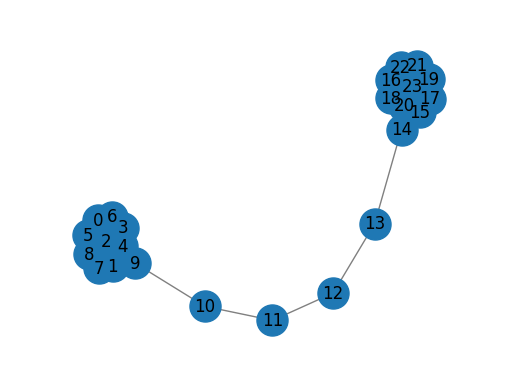
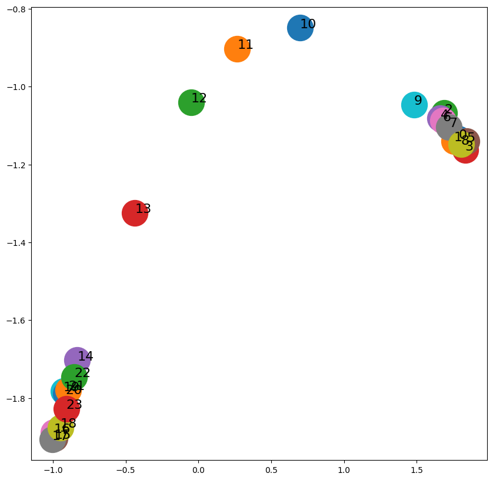
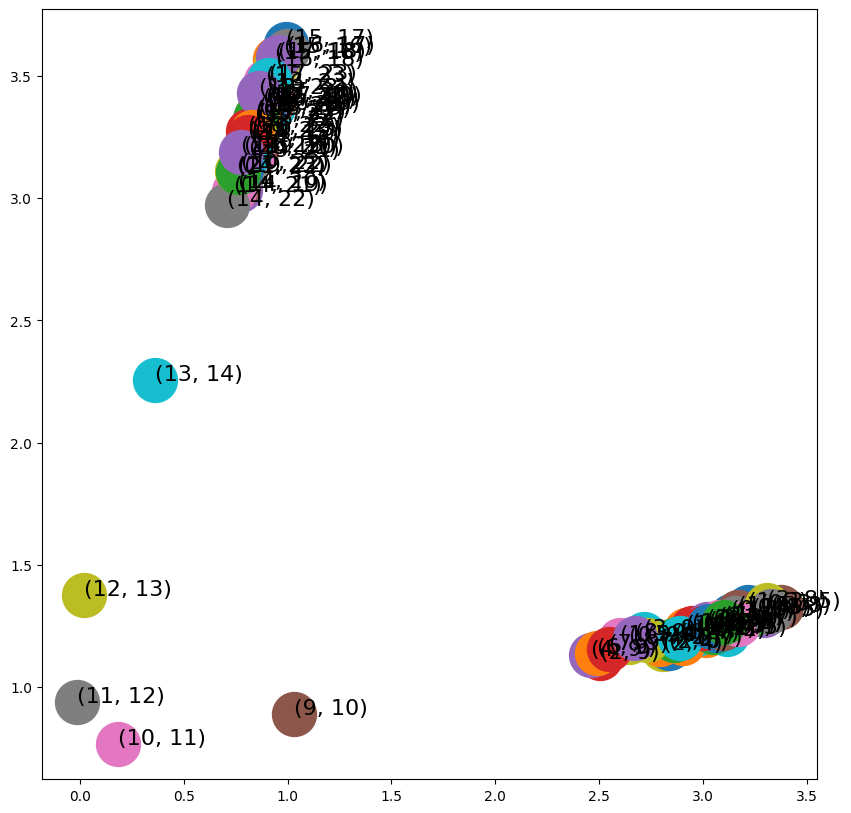
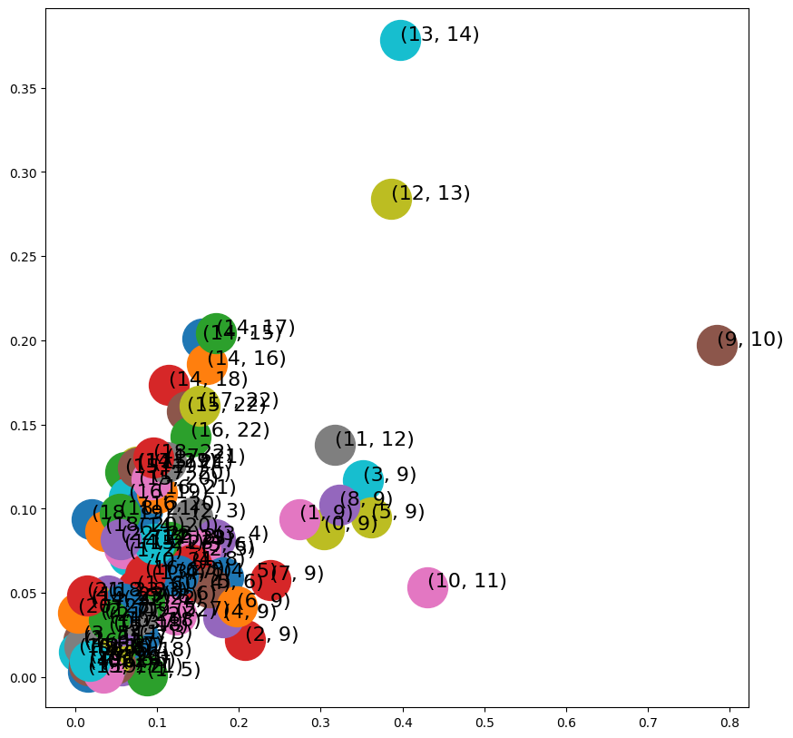
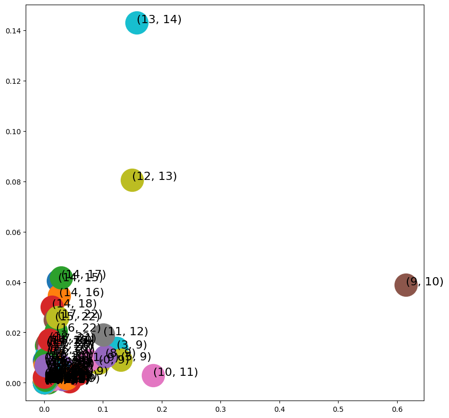
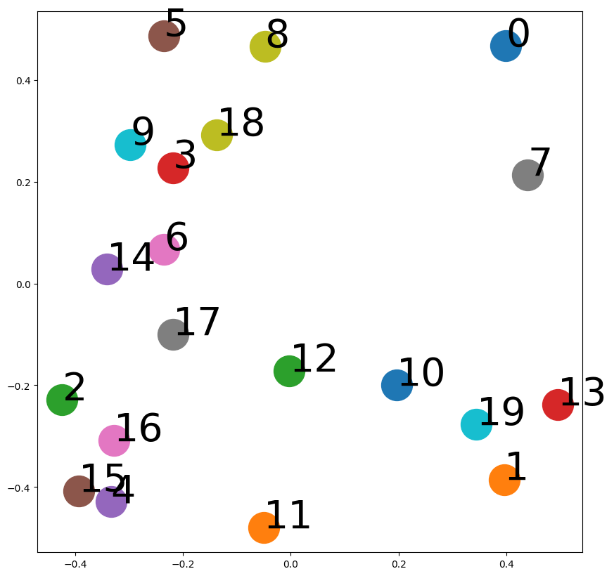

import matplotlib.pyplot as plt
def draw_graph(G, node_names={}, node_size=500):
pos_nodes = nx.spring_layout(G) # 노드를 2D좌표로
nx.draw_networkx(G, pos_nodes, with_labels=True, node_size=node_size, edge_color='gray', arrowsize=30)
#라벨 이름 그래프표현
pos_attrs = {} # 노드 이름 그래프 위에 그리기
for node, coords in pos_nodes.items():
pos_attrs[node] = (coords[0], coords[1] + 0.08)
#nx.draw_networkx_labels(G, pos_attrs, font_family='serif', font_size=20)
plt.axis('off') #X축,Y축 눈금 제거
axis = plt.gca()
axis.set_xlim([1.2*x for x in axis.get_xlim()]) #x축 범위 1.2배
axis.set_ylim([1.2*y for y in axis.get_ylim()])
plt.show()ref
얕은 임베딩 방법
- 그래프 노드 임베딩을 계싼할때 행렬분해 사용
그래프 분해(Graph Factorization)
그래프의 인접 행렬을 분해하여 노드 및 엣지에 대한 임베딩을 생성
행렬 분해 알고리즘을 사용하며, 높은 차원의 임베딩 생성 가능
단점으로는 계산 복잡도가 높고, 대규모 그래프에서는 적용이 어려울 수 있음
from gem.embedding.gf import GraphFactorization
G = nx.barbell_graph(m1=10, m2=4)
draw_graph(G)
gf = GraphFactorization(d=2, data_set=None,max_iter=10000, eta=1*10**-4, regu=1.0) #2차원 임베딩 공간 생성
gf.learn_embedding(G)
./gf not found. Reverting to Python implementation. Please compile gf, place node2vec in the path and grant executable permissionarray([[-0.00023347, 0.00423037],
[-0.00023539, 0.00422975],
[-0.00022958, 0.00424174],
[-0.00024031, 0.0042126 ],
[-0.00021981, 0.00425632],
[-0.0002757 , 0.00433198],
[-0.00043729, 0.00388277],
[-0.00120009, 0.00441975],
[ 0.00012455, 0.00342726],
[ 0.00703928, 0.00360693],
[ 0.00545482, -0.00073236],
[-0.00191172, -0.00167922],
[-0.00762759, -0.00011384],
[-0.001844 , 0.00466985],
[ 0.00523278, 0.01142738],
[ 0.0052346 , 0.01142813],
[ 0.00523662, 0.0114319 ],
[ 0.00523082, 0.01144355],
[ 0.00519996, 0.01138897],
[ 0.00519592, 0.01136481],
[ 0.00511132, 0.01157818],
[ 0.0049727 , 0.01154795],
[ 0.00689695, 0.01202013],
[ 0.00920799, 0.0153358 ]])max_iter: 최대 반복 횟수eta: 학습률regu: 정규화 계수
고차 근접 보존 임베딩(HOPE)
고차 근접성 유지, 임베딩 대칭 속성 강제X
그래프의 2차원 행렬을 생성하여 노드 및 엣지에 대한 임베딩을 생성
그래프의 고차원 구조를 보존하기 위해 그래프의 라플라시안 행렬을 이용하여 행렬 생성
계산이 간단하고, 다양한 유형의 그래프에 적용 가능
import networkx as nx
from gem.embedding.hope import HOPE
G = nx.barbell_graph(m1=10, m2=4) #바벨 그래프 생성
draw_graph(G)
hp = HOPE(d=4, beta=0.01)
hp.learn_embedding(G)
SVD error (low rank): 0.052092array([[-0.07024409, -0.07024348, -0.07024409, -0.07024348],
[-0.07024409, -0.07024348, -0.07024409, -0.07024348],
[-0.07024409, -0.07024348, -0.07024409, -0.07024348],
[-0.07024409, -0.07024348, -0.07024409, -0.07024348],
[-0.07024409, -0.07024348, -0.07024409, -0.07024348],
[-0.07024409, -0.07024348, -0.07024409, -0.07024348],
[-0.07024409, -0.07024348, -0.07024409, -0.07024348],
[-0.07024409, -0.07024348, -0.07024409, -0.07024348],
[-0.07024409, -0.07024348, -0.07024409, -0.07024348],
[-0.07104037, -0.07104201, -0.07104037, -0.07104201],
[-0.00797181, -0.00799433, -0.00797181, -0.00799433],
[-0.00079628, -0.00099787, -0.00079628, -0.00099787],
[ 0.00079628, -0.00099787, 0.00079628, -0.00099787],
[ 0.00797181, -0.00799433, 0.00797181, -0.00799433],
[ 0.07104037, -0.07104201, 0.07104037, -0.07104201],
[ 0.07024409, -0.07024348, 0.07024409, -0.07024348],
[ 0.07024409, -0.07024348, 0.07024409, -0.07024348],
[ 0.07024409, -0.07024348, 0.07024409, -0.07024348],
[ 0.07024409, -0.07024348, 0.07024409, -0.07024348],
[ 0.07024409, -0.07024348, 0.07024409, -0.07024348],
[ 0.07024409, -0.07024348, 0.07024409, -0.07024348],
[ 0.07024409, -0.07024348, 0.07024409, -0.07024348],
[ 0.07024409, -0.07024348, 0.07024409, -0.07024348],
[ 0.07024409, -0.07024348, 0.07024409, -0.07024348]])import matplotlib.pyplot as plt
fig, ax = plt.subplots(figsize=(10,10))
for x in G.nodes():
v = hp.get_embedding()[x,2:]
ax.scatter(v[0],v[1], s=1000)
ax.annotate(str(x), (v[0],v[1]), fontsize=20)
- 방향이 없으므로 원천 노드와 대상 노드 간에 차이가 없다.
전역 구조 정보를 통한 그래프 표현(GraphRep)
그래프를 분해하여 노드 및 엣지의 임베딩을 생성
그래프의 구조 정보와 노드의 속성 정보를 동시에 고려하여 임베딩 생성
다양한 유형의 그래프에 적용 가능하며, 다른 방법들에 비해 높은 임베딩 품질을 보장

DeepWalk
노드 간의 구조적 유사성을 학습하여 노드를 저차원 벡터로 표현
노드가 깊이 우선 탐색(DFS) 방식으로 샘플링된 문맥을 윈도우로 사용해 노드의 임베딩 학습
무방향성 그래프에서 랜덤 워크를 수행(무작위 경로 생성)하여, 노드의 이웃 노드를 샘플링하고 이를 바탕으로 임베딩 생성
이웃 노드를 샘플링할 때, 유사한 패턴의 노드를 더 많이 샘플링하여 군집 구조 정보를 잘 반영
계산이 간단하고, 다양한 유형의 그래프에 적용 가능
- 그래프 생성 알고리즘
1 랜덤 워크 생성: 입력 그래프 \(G\)의 각 노드에 대해 고정된 최대 길이(\(t\))를 갖는 랜덤 워크 세트 계산
2 skip-gram학습
3 임베딩 생성
import networkx as nx
from karateclub.node_embedding.neighbourhood.deepwalk import DeepWalk
G = nx.barbell_graph(m1=10, m2=4)
draw_graph(G)
dw = DeepWalk(dimensions=2)
dw.fit(G)
DeepWalkr가 영역 1을 영역 3과 분리
영역 2에 속하는 노드에 의해서 오염됬고 임베딩 공간에서 명확한 구분이 보이지 않는다.
Node2Vec
랜덤워크를 그래프에 편향된 무작위경로 생성
랜덤 워크를 수행하여 노드에 대한 임베딩을 생성
노드 간의 구조적 유사성과 동시에 노드의 속성 정보를 고려하여 임베딩을 생성
랜덤 워크 수행 시, 노드의 탐색 패턴을 조절하는 파라미터를 추가하여 다양한 유형의 그래프에서 임베딩 품질을 조정할 수 있음
다양한 그래프 분석 및 예측에 적용 가능
너비 우선 탐색(BFS), 깊이 우선 탐색(DFS)을 병합해 그래프 탐색
p랜덤 워크가 이전 노드로 돌아갈 확률q랜덤 워크가 새로운 노드로 통과할 확률
import networkx as nx
from node2vec import Node2Vec
G = nx.barbell_graph(m1=10, m2=4)
draw_graph(G)
node2vec = Node2Vec(G, dimensions=2)
model = node2vec.fit(window=10)
embeddings = model.wv
Generating walks (CPU: 1): 100%|██████████| 10/10 [00:00<00:00, 231.58it/s]import matplotlib.pyplot as plt
fig, ax = plt.subplots(figsize=(10,10))
for x in G.nodes():
v = model.wv[str(x)]
ax.scatter(v[0],v[1], s=1000)
ax.annotate(str(x), (v[0],v[1]), fontsize=16)
plt.show()
- DeepWalk에 비해 임베딩 공간에서 노드 간 더 나은 분리도
Edge2Vec
랜덤 워크를 수행하여 엣지에 대한 임베딩을 생성
노드-엣지-노드 패턴을 이용하여 엣지의 구조 정보를 고려하여 임베딩 생성
노드 및 엣지 분석에 적용 가능
\(v_i, v_j\) : 인접한 노드
\(f(v_i), f(v_j)\) : Node2Vec으로 계산된 임베딩
| 연산자 | 방정식 | 클래스이름 |
|---|---|---|
| 평균 | \(\dfrac{f(v_i)+f(v_j)}{2}\) | AverageEmbedder |
| 아다마르 | \(f(v_i)*f(v_j)\) | HamamarEmbedder |
| L1가중 | \(|f(v_i)-f(v_j)|\) | WeightedL1Embedder |
| L2가중 | \(|f(v_i)-f(v_j)|^2\) | WeightedL2Embedder |
- HadamardEmbedder
import matplotlib.pyplot as plt
fig, ax = plt.subplots(figsize=(10,10))
for x in G.edges():
v = edges_embs[(str(x[0]), str(x[1]))]
ax.scatter(v[0],v[1], s=1000)
ax.annotate(str(x), (v[0],v[1]), fontsize=16)
plt.show()
- WeightedL1Embedder
from node2vec.edges import WeightedL1Embedder
edges_embs2 = WeightedL1Embedder(keyed_vectors=model.wv)
import matplotlib.pyplot as plt
fig, ax = plt.subplots(figsize=(10,10))
for x in G.edges():
v = edges_embs2[(str(x[0]), str(x[1]))]
ax.scatter(v[0],v[1], s=1000)
ax.annotate(str(x), (v[0],v[1]), fontsize=16)
plt.show()
- WeightedL2Embedder
from node2vec.edges import WeightedL2Embedder
edges_embs3 = WeightedL2Embedder(keyed_vectors=model.wv)
import matplotlib.pyplot as plt
fig, ax = plt.subplots(figsize=(10,10))
for x in G.edges():
v = edges_embs3[(str(x[0]), str(x[1]))]
ax.scatter(v[0],v[1], s=1000)
ax.annotate(str(x), (v[0],v[1]), fontsize=16)
plt.show()
Graph2Vec
주어진 그래프 세트에서 각 점이 그래프를 나타내는 임베딩 공간 생성
그래프 자체를 벡터화하여 그래프에 대한 임베딩을 생성
전체그래프의 구조 정보와 그래프 내 노드 및 엣지의 속성 정보를 고려하여 임베딩 생성
그래프 분류 및 유사도 측정에 적용 가능
import random
import matplotlib.pyplot as plt
from karateclub import Graph2Vec
n_graphs = 20
def generate_radom():
n = random.randint(6, 20)
k = random.randint(5, n)
p = random.uniform(0, 1)
return nx.watts_strogatz_graph(n,k,p), [n,k,p] #20개의 watts_strogatz 그래프 생성
Gs = [generate_radom() for x in range(n_graphs)]
model = Graph2Vec(dimensions=2, wl_iterations=10) #2차원으로 초기화
# 학습
model.fit([x[0] for x in Gs])
embeddings = model.get_embedding()
fig, ax = plt.subplots(figsize=(10,10))
for i,vec in enumerate(embeddings):
ax.scatter(vec[0],vec[1], s=1000)
ax.annotate(str(i), (vec[0],vec[1]), fontsize=40)